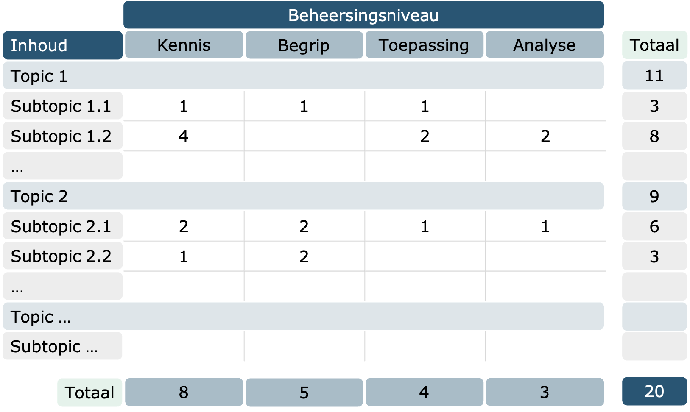

Validiteit: Meet de evaluatie wat het beoogt te meten?
Validiteit staat voor de effectiviteit waarmee een examen meet wat het beoogt te meten. Om inhoudsvalide te zijn dient een evaluatie een goede weerspiegeling te zijn van de beoogde doelstellingen van het vak. Om aan deze voorwaarde te voldoen, kan je bij het opstellen van een evaluatie starten vanuit een toetsmatrijs.

Daarnaast is het belangrijk dat de evaluatie niet onbedoeld andere zaken meet (bv. de mate waarin een leerling het juiste antwoord geeft op basis van toeval). Om te voldoen aan deze voorwaarde kan er gewerkt worden met correctie voor gokken (bv. giscorrectie, hogere cesuur, …). In kader van deze opleidingsmodule wordt het gebruik van zekerheidsgraden toegelicht, waarbij leerlingen niet enkel gevraagd worden om een antwoordmogelijkheid te kiezen, maar waarbij ze ook moeten aanduiden hoe zeker ze zijn van hun antwoord.